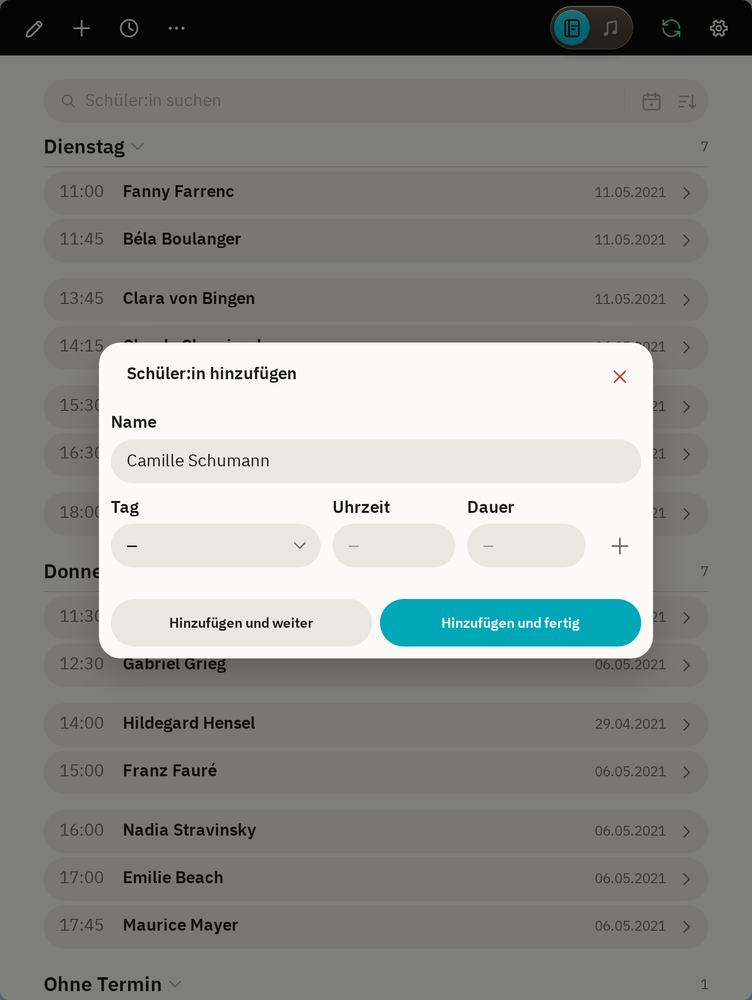
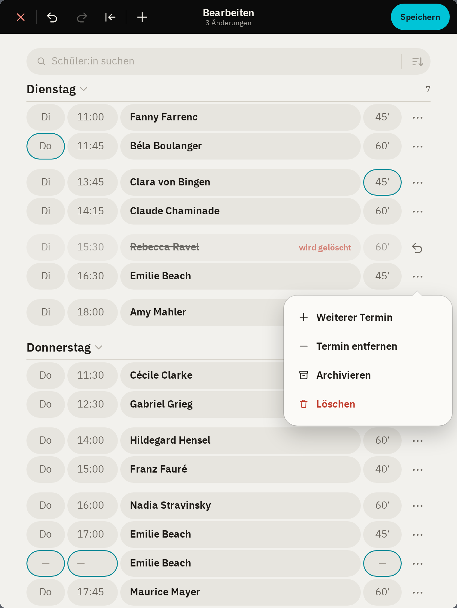
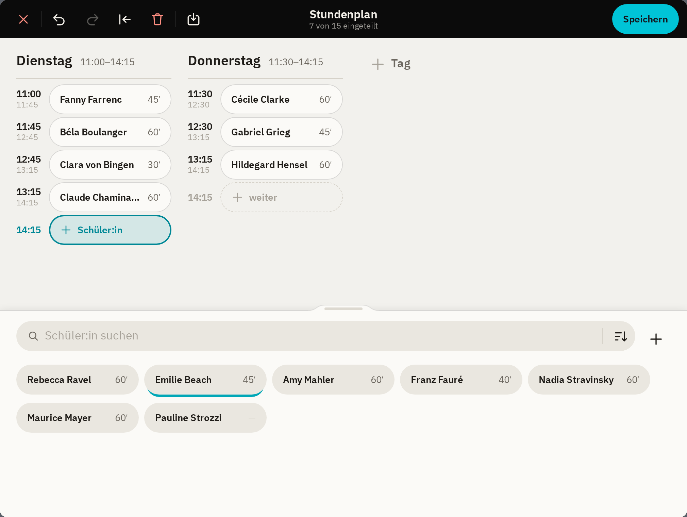
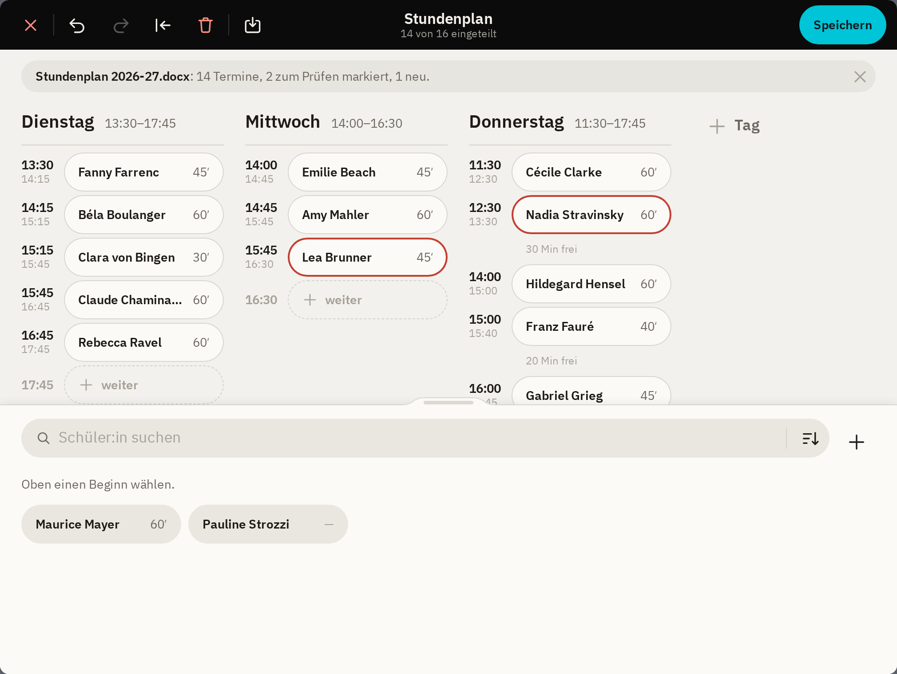
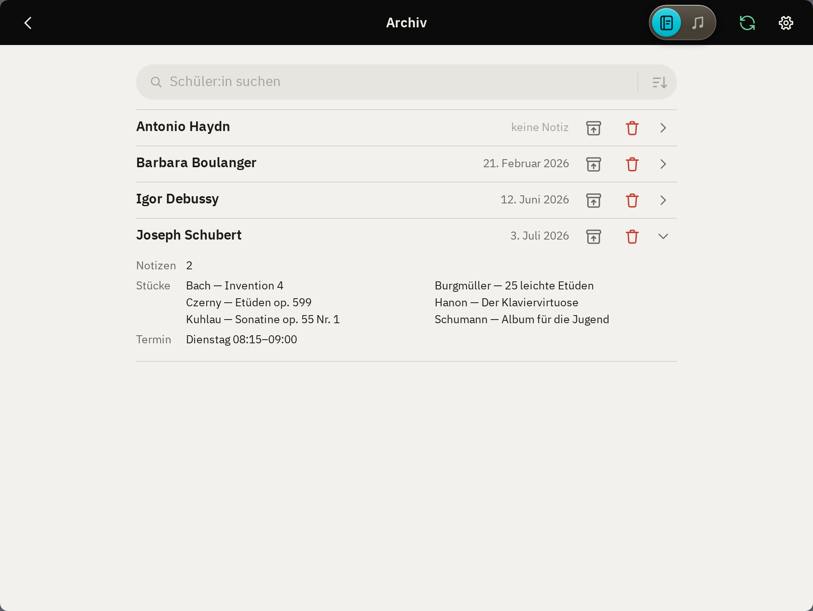
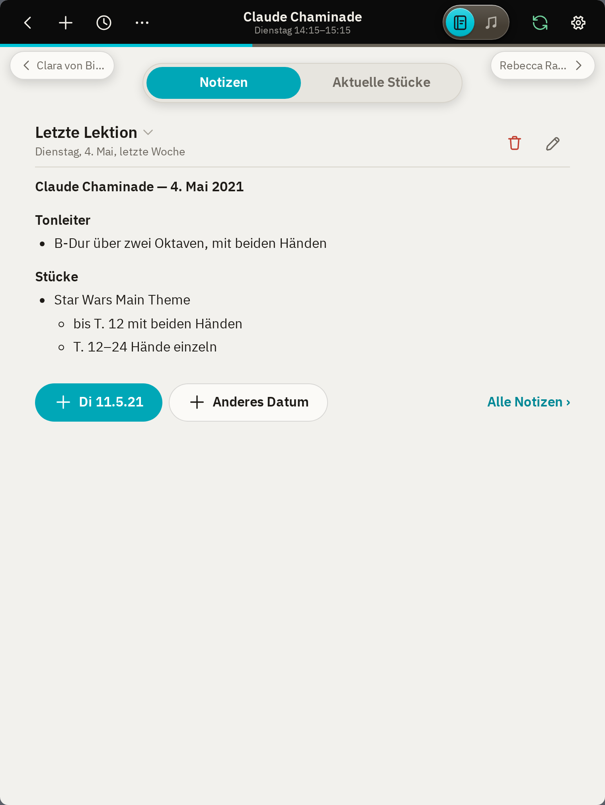
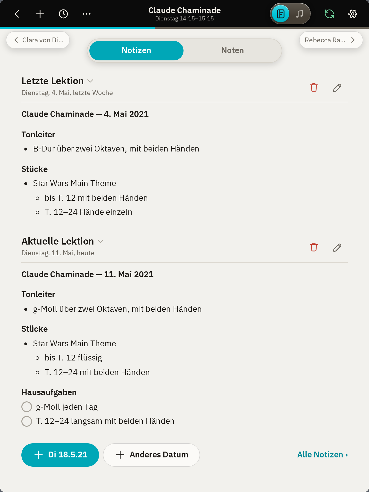
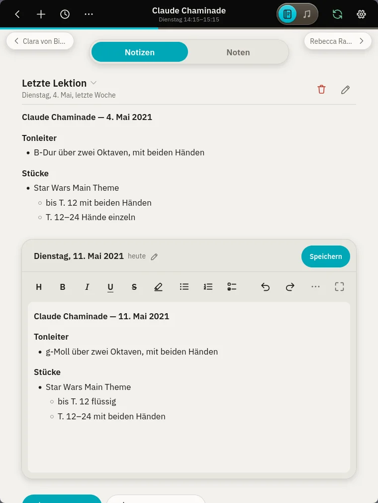
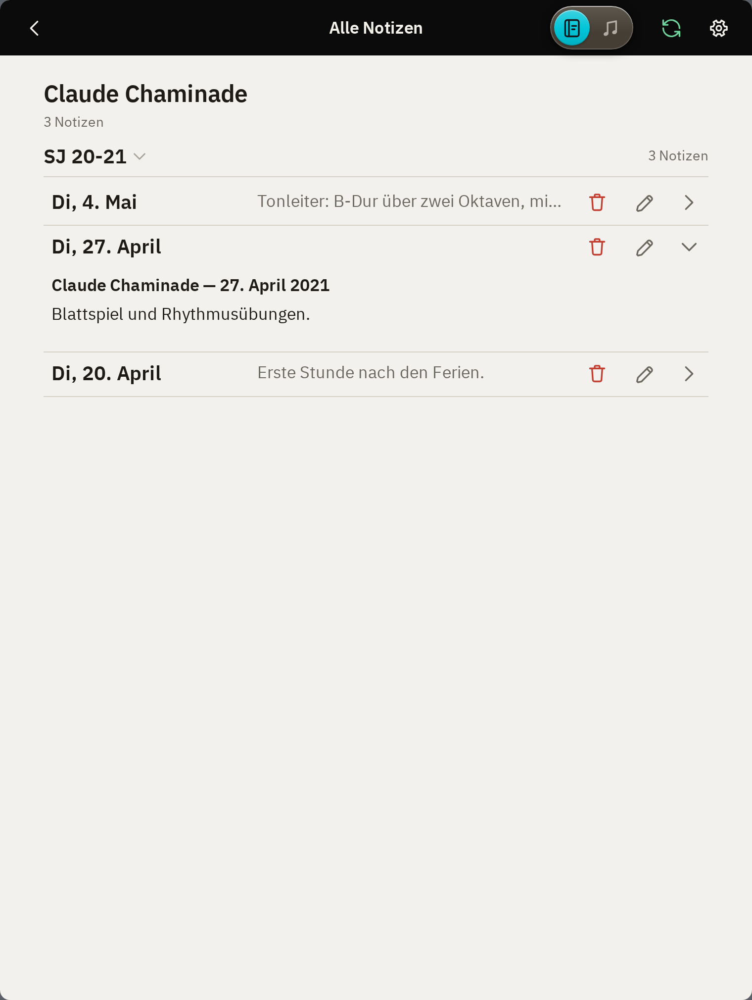
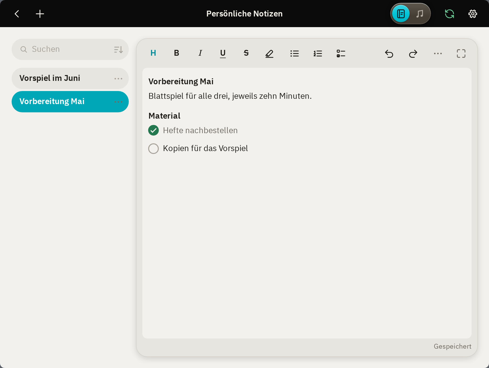

Einführung
Diese Anleitung entsteht gerade.
Unterstützte Geräte
- iPad mit iPadOS 17 oder neuer
Notizen
Schülerliste
Die Schülerliste ist der Stundenplan: Alle Schüler:innen stehen unter ihrem Unterrichtstag, nach Uhrzeit geordnet. Rechts steht, wann die letzte Notiz verfasst wurde. Ein Tippen auf den Namen öffnet die Seite der Schüler:in.

- Die laufende Lektion ist farbig umrandet.
- Ein Tippen auf einen Wochentag klappt ihn zu oder auf.
- Ein Tippen auf im Suchfeld zeigt nur den heutigen Tag.
- Mittels im Suchfeld kann die Liste nach Stundenplan oder alphabetisch sortiert werden.
- Ein Tippen auf oben öffnet die laufende oder als nächstes folgende Lektion.
Schüler:innen hinzufügen
Ein Tippen auf oben öffnet «Schüler:in hinzufügen». Nötig ist nur der Name.


- Mit neben der Dauer lässt sich ein weiterer Termin hinzufügen, für Schüler:innen, die mehrmals pro Woche kommen.
- «Hinzufügen und fertig» schliesst das Fenster.
- «Hinzufügen und weiter» lässt es offen für die nächste Schüler:in. Die Uhrzeit rückt dabei um die Dauer weiter.
Liste bearbeiten
Ein Tippen auf oben öffnet die Liste zum Bearbeiten. Jede Zeile ist ein Termin: Tag, Uhrzeit, Name und Dauer lassen sich direkt antippen und ändern. Mit am Ende der Zeile lassen sich Termine hinzufügen oder entfernen sowie Schüler:innen archivieren oder löschen.


- Geänderte Werte sind farbig umrandet.
- Gespeichert wird erst mit «Speichern». verwirft alle Änderungen und beendet das Bearbeiten. Mit und lassen sich einzelne Schritte rückgängig machen und wiederherstellen, mit alle Änderungen auf einmal zurücksetzen.
- Ein neuer Name benennt auch den Ordner der Schüler:in um.
- «Löschen» entfernt die Schüler:in mit allen Notizen. «Archivieren» entfernt sie aus dem Stundenplan, behält aber alle Dateien (siehe Archiv).
Stundenplaner
Der Stundenplaner ( › «Stundenplaner») erleichtert die Planung sowie grosse Veränderungen am Stundenplan.


- Im oberen Teil befindet sich die Einteilung, während im unteren Teil alle noch nicht eingeteilten Schüler:innen aufgelistet sind.
- Um eine Schüler:in einzuteilen, wähle erst einen Platz im Stundenplan: «+ Beginn» am Anfang eines Tages, «+ weiter» an seinem Ende oder «+ Tag» für einen neuen Unterrichtstag. Die Uhrzeit des gewählten Platzes lässt sich antippen, um sie zu ändern. Tippe dann unten auf die gewünschte Schüler:in, um sie diesem Platz zuzuteilen. Der gewählte Platz rückt automatisch um ihre Dauer weiter, bereit für die nächste Schüler:in.
- Schüler:innen lassen sich auch an einen freien Platz ziehen. Auf eine bestehende Lektion gezogen, wird diese Zeit von beiden Schüler:innen besetzt, etwa für wöchentlich abwechselnden Unterricht.
- Eine von Hand geänderte Uhrzeit bleibt, wo sie ist. Überschneidungen sind erlaubt und rot markiert.
- Mit langem Drücken auf eine Schüler:in in der Liste unten lässt sich diese bearbeiten (Dauer, Termine pro Woche) sowie archivieren oder löschen.
- Mit lassen sich neue Schüler:innen hinzufügen.
- Gespeichert wird erst mit «Speichern». verwirft alle Änderungen und schliesst den Stundenplaner. Mit und lassen sich einzelne Schritte rückgängig machen und wiederherstellen, mit alle vorgenommenen Änderungen auf einmal zurücksetzen.
- Mittels lässt sich der Stundenplan leeren, etwa für ein neues Schuljahr. Alle Schüler:innen kommen dann zurück in die Liste unten.
Stundenplan importieren
Ein bestehender Stundenplan lässt sich importieren, etwa eine Liste der Schule oder eine eigene Tabelle. Er wird direkt auf dem iPad gelesen, die Datei verlässt das Gerät nicht.


- Im Stundenplaner auf tippen.
- «Datei» wählen oder «Text einfügen».
- Die bestehende Einteilung wird durch den gefundenen Stundenplan ersetzt.
- Die rot umrandeten Lektionen prüfen.
- Mit «Speichern» übernehmen.
- Rot markiert wird, was nicht sicher erkannt werden konnte: Namen, die nur fast mit bereits bestehenden Schüler:innen übereinstimmen, beim Import neu hinzugefügte Schüler:innen oder eine unklare Uhrzeit. Mittels Tippen auf eine markierte Schüler:in lässt sich diese überprüfen und gegebenenfalls anpassen.
- Bisherige Schüler:innen, die im importierten Stundenplan nicht vorkommen, bleiben in der Liste und lassen sich von Hand einteilen oder entfernen.
- Erkannt werden die üblichen Schreibweisen, als Liste oder als Tabelle:
Mo. 14:00–14:45 Fanny Farrenc 14.45 Béla Boulanger, 30 min Dienstag 14 Uhr Clara von Bingen 14h45 Claude Chaminade
Montag Dienstag 14:00 Fanny Farrenc Clara von Bingen 14:45 Béla Boulanger Claude Chaminade - Unterstützte Dateien: .docx, .xlsx, .odt, .ods, .pdf (nicht gescannt), .rtf, .html, .csv, .txt
Archiv
Inaktive Schüler:innen können archiviert statt gelöscht werden, um ihre Notizen und Dateien zu erhalten. Notizen, Stücke und Termine bleiben somit im Ordner Padago gespeichert.


- Das Archiv kann über den Link «Archiv ›» unter der Schülerliste aufgerufen werden.
- Ein Tippen auf den Namen zeigt eine Zusammenfassung der Daten zu dieser Schüler:in.
- Mit kann die Schüler:in zurückgeholt werden.
- Mit kann die Schüler:in endgültig gelöscht werden.
Die Seite einer Schüler:in
Ein Tippen auf eine Schüler:in in der Schülerliste öffnet ihre Übersichtsseite.


- An der Lektions-Fortschrittsanzeige unter der Werkzeugleiste kann während der Lektion abgelesen werden, wie viel Zeit bereits vergangen ist. Sie erscheint nur, wenn für den Termin eine Dauer eingetragen ist, und lässt sich unter Einstellungen › Allgemein ausschalten.
- Mit den Namen oben links und rechts kann direkt zur vorigen oder nächsten Schüler:in im Stundenplan navigiert werden.
- «Notizen» zeigt die Notizen zu den Lektionen, «Noten» die der Schüler:in zugeordneten Stücke (siehe Stücke zuordnen).
Letzte und nächste Lektion
Unter «Notizen» steht zuoberst die Notiz der letzten Lektion. So ist auf einen Blick ersichtlich, woran zuletzt gearbeitet wurde.
- Ein Tippen auf «+ Di 11.5.21» erstellt die Notiz für die nächste Lektion gemäss Stundenplan, für die noch keine Notiz existiert.
- Mit «+ Anderes Datum» lässt sich eine Notiz für ein beliebiges Datum erstellen, zum Beispiel um eine Lektion nachzutragen.
- «Alle Notizen ›» zeigt alle bisherigen Notizen der Schüler:in.
Sobald es eine Notiz für heute gibt, erscheint sie unter der letzten Lektion als «Aktuelle Lektion».


- Mit lässt sich eine Notiz bearbeiten, mit löschen.
- Aufgaben lassen sich mit einem Tippen auf den Kreis abhaken, ohne die Notiz zu öffnen.
Notizen schreiben
Eine neue Notiz beginnt standardmässig mit dem Namen der Schüler:in und dem Datum als Titel. Gespeichert wird laufend, auch ohne Schliessen der Notiz durch «Speichern».


- Die Leiste über der Notiz bietet die gängigsten Formatierungsoptionen. Zusätzliche Optionen sind im Vollbild-Editor vorhanden, erreichbar mittels .
- Mit einem Wischen mit dem Finger nach rechts über bestehende Listenpunkte lassen sich diese einrücken, nach links wieder ausrücken.
- Unter lässt sich die Notiz als Datei teilen, mit Formatierung kopieren (um sie z. B. als Aufgabe per E-Mail zu teilen) oder löschen.
- «Expertenmodus» unter zeigt die Notiz als Markdown, so wie sie in der Datei steht. «Vorschau» zeigt sie dort formatiert.
- Eine Notiz, die ausserhalb von padago in einer nicht unterstützten Schreibweise verfasst wurde, öffnet im Expertenmodus. Die betroffenen Stellen sind rot markiert; «Normal anzeigen» schreibt sie in eine unterstützte Schreibweise um, der Inhalt bleibt dabei erhalten.
- Ein Tippen auf das Datum über der Notiz ändert ihren Tag. Ein Tag, der schon eine Notiz hat, lässt sich nicht wählen.
- «Speichern» schliesst die Notiz.
Alle Notizen
«Alle Notizen ›» zeigt sämtliche Notizen einer Schüler:in, die neueste zuoberst, nach Schuljahren geordnet.


- Mit lässt sich eine Notiz direkt in der Liste bearbeiten, mit löschen.
- Der Schuljahresbeginn lässt sich unter Einstellungen › Notizen anpassen.
Persönliche Notizen
Die Persönlichen Notizen bieten Platz für Notizen, die sich keiner Schüler:in zuordnen lassen. Sie sind erreichbar über › «Persönliche Notizen» oder über eine unter Einstellungen › Gesten definierte Geste.


- legt eine neue Notiz an. Ihre erste Zeile wird als Titel in der Liste angezeigt.
- Das Suchfeld durchsucht Titel und Text. Mittels lassen sich die Notizen nach «Neueste zuerst», «Zuletzt geändert» oder alphabetisch sortieren.
- Mit neben einem Titel lässt sich die Notiz teilen, duplizieren oder löschen.
- Die Dateien liegen im Ordner «Persönlich» (siehe Der Ordner Padago).
Noten
Notenbibliothek
Noten importieren
Folgt.
Ordner, Suche und Sortierung
Folgt.
Stücke zuordnen
Folgt.
Vorlagen
Folgt.
Notenviewer
Umblättern
Folgt.
Darstellung
Folgt.
Neu anordnen
Folgt.
Zuschneiden
Folgt.
Optimieren
Folgt.
Anmerkungen
Stifte
Folgt.
Lineal
Folgt.
Auswahl
Folgt.
Radierer
Folgt.
Werkzeuge
Metronom
Folgt.
Stimmgerät
Folgt.
Klaviatur
Folgt.
Whiteboard
Folgt.
Einstellungen
Allgemein
Folgt.
Notizen
Folgt.
Noten
Folgt.
Gesten
Folgt.
Exportieren
Folgt.
Daten
Der Ordner Padago
Alle Daten werden in einem Ordner auf dem iPad gespeichert, in der Dateien-App unter «Auf meinem iPad» › «padago» › «Padago». Dieser Ordner kann jederzeit aus padago heraus angezeigt werden: «Einstellungen» › «Speicher» › «In Dateien zeigen».
Darin liegen zwei Unterordner:
- Noten: die Notenbibliothek, als PDF-Dateien, beliebig in Unterordner geordnet.
- Notizen: ein Ordner pro Schüler:in mit den Notizen, den zugeordneten Stücken und den Anmerkungen. Dazu «Persönlich» für die persönlichen Notizen und «archiv» für archivierte Schüler:innen.
Es sind gewöhnliche Dateien, lesbar auch ohne padago (siehe Die Dateien ausserhalb von padago).
Die Dateien ausserhalb von padago
Folgt.
Synchronisation
Speicherort: iPad oder Nextcloud
Folgt.
Nextcloud verbinden
Folgt.
Ohne Verbindung
Folgt.
Live
Folgt.